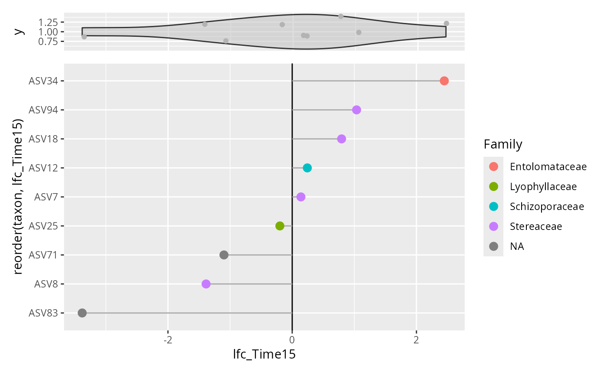

Graphical representation of ANCOMBC2 result.
Usage
plot_ancombc_pq(
physeq,
ancombc_res,
filter_passed = TRUE,
filter_diff = TRUE,
min_abs_lfc = 0,
tax_col = "Genus",
tax_label = "Species",
add_marginal_vioplot = TRUE,
add_label = TRUE,
add_hline_cut_lfc = NULL
)Arguments
- physeq
(required): a
phyloseq-classobject obtained using thephyloseqpackage.- ancombc_res
(required) the result of the ancombc_pq function For the moment only bimodal factors are possible.
- filter_passed
(logical, default TRUE) Do we filter using the column passed_ss? The passed_ss value is TRUE if the taxon passed the sensitivity analysis, i.e., adding different pseudo-counts to 0s would not change the results.
- filter_diff
(logical, default TRUE) Do we filter using the column diff? The diff value is TRUE if the taxon is significant (has q less than alpha)
- min_abs_lfc
(integer, default 0) Minimum absolute value to filter results based on Log Fold Change. For ex. a value of 1 filter out taxa for which the abundance in a given level of the modalty is not at least the double of the abundance in the other level.
- tax_col
The taxonomic level (must be present in
tax_tableslot) to color the points- tax_label
The taxonomic level (must be present in
tax_tableslot) to add label- add_marginal_vioplot
(logical, default TRUE) Do we add a marginal vioplot representing all the taxa lfc from ancombc_res.
- add_label
(logical, default TRUE) Do we add a label?
- add_hline_cut_lfc
(logical, default NULL) Do we add two horizontal lines when min_abs_lfc is set (different from zero)?
Value
A ggplot2 object. If add_marginal_vioplot is TRUE, this is a
patchworks of plot made using patchwork::plot_layout().
Details
This function is mainly a wrapper of the work of others.
Please make a reference to ANCOMBC::ancombc2() if you
use this function.
Examples
# \donttest{
if (requireNamespace("mia")) {
data_fungi_mini@tax_table <- phyloseq::tax_table(cbind(
data_fungi_mini@tax_table,
"taxon" = taxa_names(data_fungi_mini)
))
res_time <- ancombc_pq(
data_fungi_mini,
fact = "Time",
levels_fact = c("0", "15"),
tax_level = "taxon",
verbose = TRUE
)
plot_ancombc_pq(data_fungi_mini, res_time,
filter_passed = FALSE,
tax_label = "Genus", tax_col = "Order"
)
plot_ancombc_pq(data_fungi_mini, res_time, tax_col = "Genus")
plot_ancombc_pq(data_fungi_mini, res_time,
filter_passed = FALSE,
filter_diff = FALSE, tax_col = "Family", add_label = FALSE
)
}
#> Checking the input data type ...
#> The input data is of type: TreeSummarizedExperiment
#> PASS
#> Checking the sample metadata ...
#> The specified variables in the formula: Time
#> The available variables in the sample metadata: X, Sample_names, Tree_name, Sample_id, Height, Diameter, Time
#> PASS
#> Checking other arguments ...
#> The number of groups of interest is: 2
#> Warning: The group variable has < 3 categories
#> The multi-group comparisons (global/pairwise/dunnet/trend) will be deactivated
#> The sample size per group is: 0 = 30, 15 = 34
#> PASS
#> Warning: The number of taxa used for estimating sample-specific biases is: 9
#> A large number of taxa (>50) is required for the consistent estimation of biases
#> Obtaining initial estimates ...
#> Estimating sample-specific biases ...
#> Warning: Estimation of sampling fractions failed for the following samples:
#> BT-006-M_S55_MERGED.fastq.gz, C21-NV1-B_S62_MERGED.fastq.gz, CB8-019-H_S70_MERGED.fastq.gz, DY5-004-B_S96_MERGED.fastq.gz, DY5-004-H_S97_MERGED.fastq.gz, J18-004-M_S116_MERGED.fastq.gz, W26-001-B_S165_MERGED.fastq.gz, X24-009-B_S170_MERGED.fastq.gz
#> These samples may have an excessive number of zero values
#> Conducting sensitivity analysis for pseudo-count addition to 0s ...
#> For taxa that are significant but do not pass the sensitivity analysis,
#> please flag them and proceed with caution, as they are likely false positives.
#> For detailed instructions on performing sensitivity analysis,
#> please refer to the package vignette.
#> ANCOM-BC2 primary results ...

# }